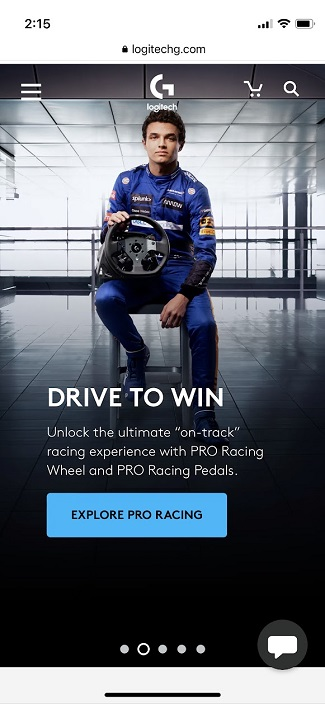

Amazon
amazon.comThe Amazon.com homescreen shown here is a great example of the rule of thirds. This is because there are three distinct sections with different purposes. First, the top third has a link to your profile and cart, as well as a seach button and links to special product categories. Second, in the middle of the screen is a rotating photo gallery of different special offers and advertisements. And third, the bottom portion is personalized recommendations and products that have been viewed previously. Each section has a unique purpose, and the organization makes it easy for the user to choose what option they want.
K2 Snow
k2snow.comThis screenshot of the K2 Snow homepage shows how contrast can add to a website design. The contrast of the skier in dark clothing against a white/gray snow background with white lettering is very eye-catching. Most people visiting this website are skiers and snowboarders, so this choice of image is particularly influencial. It attracts the viewer and makes them consider what the image is linking to, which in this case is the new collection of K2 skis and apparel.
Logitech
logitechg.com This screenshot of Logitech's website uses white space to present a very clean design, which leads the viewers eyes directly to the "Drive to Win" headline. Personally, I'm not interested in racing simulators, but this design still caught my attention and at least made me look at what it is trying to show me. I was particularly impressed by how clean the design is on this page, especially viewing on a mobile device. The majority of websites are hard to navigate and cluttered on mobile, but Logitech's website is very clean and navigable.